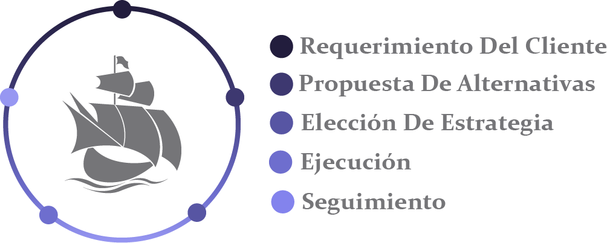

Conquistando el mundo por más de 28 años!!!
Con más de 28 años de experiencia en el mercado corporativo internacional, PMC Asset Management establece sólidas relaciones con sus clientes estableciendo un horizonte a largo plazo. Si es un individuo, familia, empresario o corporación, nuestro enfoque se orienta a plasmar el desarrollo de estrategias, hechas a la medida, que le permita adquirir alto grado de confianza, procurando la seguridad, y el resguardo de su legado.
PMC GROUP, surge en 1989 desde la Ciudad de Panamá para incorporarse desde sus inicios al mercado internacional de servicios corporativos. Nuestra estrategia de expansión contempló la apertura de oficinas internacionales, con políticas corporativas orientadas a satisfacer las necesidades y retos del entorno socioeconómico actual. PMC Asset Management Corp. es una firma de consultoría especializada, en implementar soluciones para Planeación de Patrimonios, Protección de Activos, apoyados así mismo en asesoramiento en estrategia fiscal internacional. Somos expertos en soluciones financieros para controlar, administrar los bienes, activos corporativos y familiares. Analizamos, comprendemos las necesidades, los desafíos y oportunidades de nuestros clientes, orientándolos a definir soluciones financieras, convirtiéndonos en su aliado estratégico, para desarrollar “Soluciones Óptimas”.
A partir de un diagnóstico específico, en el que PMC Asset Management Corp.,
facilita el proceso y
el cliente participa activamente, logramos la comprensión de las necesidades, los desafíos y
oportunidades de su operación, y orientamos al cliente a definir estrategias más adecuadas,
convirtiéndonos en su aliado. La metodología que utilizamos incluye la realización de
investigaciones, incorporación de profesionales capacitados en la materia y estudios específicos ya
sea de mercado, financieros, entre otros.

A partir de un diagnóstico específico, en el que PMC Asset Management Corp., facilita el proceso y el cliente participa activamente, logramos la comprensión de las necesidades, los desafíos y oportunidades de su operación, y orientamos al cliente a definir estrategias más adecuadas, convirtiéndonos en su aliado. La metodología que utilizamos incluye la realización de investigaciones, incorporación de profesionales capacitados en la materia y estudios específicos ya sea de mercado, financieros, entre otros.
Si su meta es un sólido crecimiento económico PMC Asset Management puede contribuir a
guiarle a través del proceso, y soluciones tales como:
Nuestra propuesta de soluciones se basa en nuestra vasta trayectoria y experiencia, en los mercados internacionales y al enfoque integrado entre la gestión y ejecución de las estrategias propuestas, así como el seguimiento y servicio después de la implementación.
Nuestros consultores representan para nosotros el mayor activo de la compañía. Contamos con un equipo de profesionales altamente calificados, especializados en temas internacionales. Buscamos motivar a nuestro capital humano para alcanzar los objetivos planteados a través del trabajo en equipo y de esta manera, ofrecer un servicio de calidad personalizado de acuerdos a la as necesidades de cada cliente
A partir de un diagnóstico específico, en el que PMC Asset Management Corp.,
facilita el proceso y
el cliente participa activamente, logramos la comprensión de las necesidades, los desafíos y
oportunidades de su operación, y orientamos al cliente a definir estrategias más adecuadas,
convirtiéndonos en su aliado. La metodología que utilizamos incluye la realización de
investigaciones, incorporación de profesionales capacitados en la materia y estudios específicos ya
sea de mercado, financieros, entre otros.
Experiencia en el sector corporativo por más de 28 años
Nuestro trabajo se enmarca en la privacidad, confidencialidad y protección de la información de cada uno de nuestros clientes
Orientación profesional y especializada de cómo proteger sus activos y patrimonio
Hacemos el uso más eficiente de las últimas tecnologías
Contamos con una amplia red de aliados y agentes a nivel internacional
Beneficios a largo plazo a través de relaciones de confianza
World Trade Center Panama
53rd Street, Urb. Marbella 8th Floor
Ciudad de Panamá, Rep. de Panamá
Teléfono: +507 – 302-9400
P.O. Box 0832-00108 WTC
Panama, Republic of Panama
Sitio En Mantenimiento
Por favor, visualizar en un dispositivo con pantalla superior a 1080px